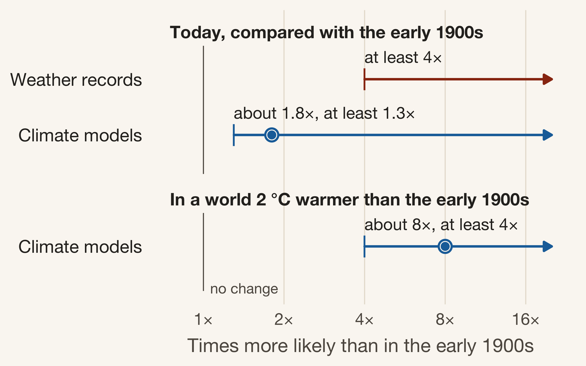

Freak event, or a sign of things to come?
Australia’s 2019/20 bushfire season, now known as Black Summer, was one of the most destructive the country has experienced. Fires burned at least 19.4 million hectares, killed 34 people directly and destroyed around 5,900 homes and other buildings (van Oldenborgh et al. 2021). The harm reached well beyond the fire zones: in New South Wales, emergency-department visits for asthma and breathing problems rose by 34% in the week from 30 December 2019.
Once the fires were out, one question kept coming up in the news: was Black Summer a freak event, or a sign that climate change is making seasons like it more likely? This post explains what one scientific study found when it set out to answer that question.
The study looks only at the weather side of bushfire risk. A bushfire also needs something to start it and fuel to burn, and how it spreads depends on the landscape and on how it is fought. None of those are covered here. What the study measures is fire weather: the hot, dry and windy conditions that help a fire spread once it has started. So it can tell us whether conditions like 2019/20 have become more common, but not whether climate change caused any particular fire.
Where the evidence comes from
The evidence comes from a peer-reviewed study by an international team of climate scientists, published in 2021 in the journal Natural Hazards and Earth System Sciences (van Oldenborgh et al. 2021). The team focused on south-eastern Australia, covering eastern New South Wales and eastern Victoria where many of the largest fires burned, and on the fire season from September to February.
To measure fire weather, the scientists used the Fire Weather Index (FWI). The FWI is a daily score of how easily a fire could spread, calculated from four everyday weather readings: temperature, humidity, wind speed and rainfall. A higher score means more dangerous conditions. For each fire season, the team picked out the most dangerous week of fire weather, and they checked that seasons with a worse week by this measure have also tended to see more land burn.
The weather readings come from ERA5, a reconstruction of past weather produced by the European Centre for Medium-Range Weather Forecasts (Hersbach et al. 2019). ERA5 combines observations from weather stations, satellites, weather balloons and ships with a forecasting model that fills in the gaps, giving a consistent day-by-day record for the whole region from 1979 onwards. Because four decades is a short record, the team also used Australian temperature records going back to 1910 and computer simulations of the climate from several research groups.
The method rests on a single comparison. The team estimated how often fire weather as bad as 2019/20 should be expected in today’s climate, and how often it would have been expected in the cooler climate of around 1900, before most of the warming caused by people. Dividing one by the other gives the number at the heart of this post: how many times more likely a season like Black Summer has become.
What the scientists found
Black Summer broke the fire-weather record
By the Fire Weather Index, 2019/20 was the most dangerous fire season in the ERA5 record, which goes back to 1979 (van Oldenborgh et al. 2021). After allowing for the warming trend, the scientists estimate that a season this extreme can now be expected about once every 31 years on average. In the climate of around 1900, it would have been rarer than once every 800 years.
Those figures come with wide margins. Four decades of records is a short time in which to judge very rare events, and the “once every 31 years” estimate could lie anywhere between once every 4 years and once every 500 years. Because of that uncertainty, the scientists lean on cautious “at least” numbers, and so does the rest of this post.
How much more likely is a season like it now?
Every estimate in the study points the same way: fire weather as bad as Black Summer has become more likely. Figure 1 shows by how much. Weather records suggest that a season like 2019/20 is now at least four times as likely as it was in the early 1900s. Climate models give a smaller increase: about 1.8 times as likely, and at least 1.3 times (van Oldenborgh et al. 2021).
The scientists treat the models’ number as a cautious lower limit rather than the best answer. The models underestimate how quickly the hottest days have warmed in south-eastern Australia, and that pushes their estimate down. Looking ahead, the models suggest that in a world 2 °C warmer than the early 1900s, seasons like Black Summer would be about eight times as likely. That projection comes from the only two models with suitable simulations of a warmer future, so it carries the same tendency to understate.
Heat, not drought, is behind the trend
Rising heat, not a lack of rain, is what has pushed fire weather up. Table 1 puts the study’s four measures side by side. Both fire-weather measures have become more likely, and so has the extreme heat that feeds them: by the weather records, a week as hot as the hottest of 2019/20 is now about ten times as likely as around 1900, and the climate models agree it is at least twice as likely. Dry conditions are the exception. Neither the records nor the models show a clear trend towards drier years in the region.
| What was measured |
Today, compared with the early 1900s
|
Looking ahead
|
|
|---|---|---|---|
| Weather records | Climate models | Climate models, 2 °C warmer world | |
| Fire weather the most dangerous week of fire weather in the season |
at least 4× | about 1.8×, at least 1.3× | about 8×, at least 4× |
| Fire control difficulty the month when fires were hardest to bring under control |
at least 9× | about 2×, but could be no change | about 4×, at least 2× |
| Extreme heat the hottest week of the fire season |
about 10× | at least 2× | not assessed |
| Dry conditions low rainfall over the year and in the driest month |
No clear trend | No clear trend | not assessed |
The scientists also checked which weather ingredient drives the change. When they removed the long-term trend from each of the four readings in turn, rising temperature explained roughly half of the increase in fire weather in two of the four climate models they examined, and about a third in another; in the fourth, falling humidity mattered most (van Oldenborgh et al. 2021). In the ERA5 records, temperature was again the leading factor.
The very dry conditions of 2019 had other causes. Most of the rainfall shortfall came from two natural swings in the climate system that both reached record levels that year: the Indian Ocean Dipole, a difference in sea temperatures between the western and eastern Indian Ocean, and the Southern Annular Mode, a north–south shift in the band of westerly winds that circles Antarctica. The drought made 2019/20 worse, but the study found no sign that dry years like it are becoming more common in the region.
What these numbers can and can’t tell us
Three limits are worth keeping in mind when reading these results.
- The numbers are minimums, not best guesses. The climate models produce too much variation from one year to the next and underestimate how fast the hottest days are warming. Both problems push their estimates down, so the real increase is probably larger than the models suggest.
- The fire-weather record is short. ERA5 starts in 1979, so it covers only about 40 fire seasons. The heat results, which use temperature records back to 1910, rest on firmer ground.
- This is about weather, not fires. The study leaves out how fires start, how much fuel is on the ground and how fires are managed. It shows that the weather behind Black Summer has become more likely, not that every future fire season will be as destructive.
So, what does this mean?
Black Summer was an extreme season, but it was not simply bad luck. Its fire weather was the worst in four decades of records, and climate change has made weather like it at least 30% more likely than in the early 1900s, with the weather records pointing to at least four times as likely. The main reason is rising heat. The 2019 drought made things worse, but the study found no long-term drying trend behind it.
These results fit with a wider body of evidence. Researchers have detected the influence of climate change on fire weather across many parts of the world (Abatzoglou et al. 2019), and Australia’s Bureau of Meteorology and CSIRO report that extreme fire weather and the length of the fire season have increased across large parts of Australia since the 1950s (Bureau of Meteorology and CSIRO 2024).
For readers in south-eastern Australia, the practical message is that a season like 2019/20 should no longer be thought of as a once-in-a-lifetime event. The climate models suggest it would become about eight times as likely as in the early 1900s if global warming reaches 2 °C, and those models tend to understate the change. How common such seasons become will depend on how much more the planet warms.
References
Abatzoglou, John T., A. Park Williams, and Renaud Barbero. 2019. “Global Emergence of Anthropogenic Climate Change in Fire Weather Indices.” Geophysical Research Letters 46 (1): 326–36.
Bureau of Meteorology, and CSIRO. 2024. State of the Climate 2024. Australian Bureau of Meteorology; CSIRO. http://www.bom.gov.au/state-of-the-climate/.
Hersbach, Hans, Bill Bell, Paul Berrisford, et al. 2019. “Global Reanalysis: Goodbye ERA-Interim, Hello ERA5.” ECMWF Newsletter 159: 17–24.
van Oldenborgh, Geert Jan, Folmer Krikken, Sophie Lewis, et al. 2021. “Attribution of the Australian Bushfire Risk to Anthropogenic Climate Change.” Natural Hazards and Earth System Sciences 21 (3): 941–60.